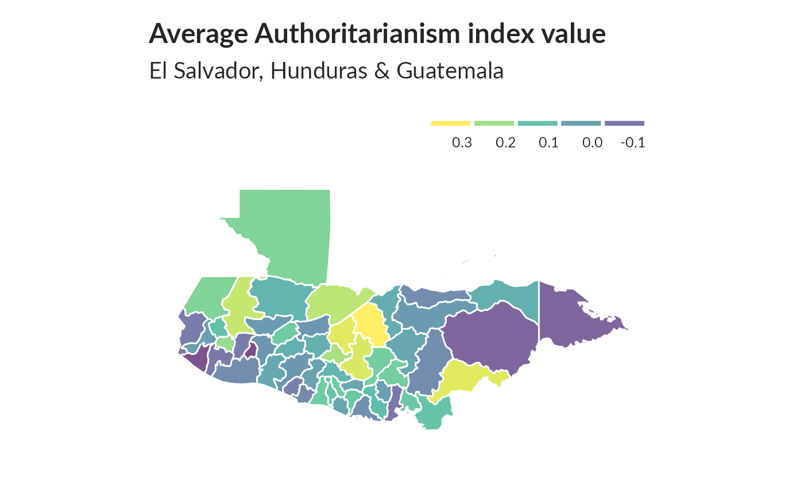

#> All variables for the index are present in the datasetInputed missing percent values: c(0.196187175043328, 0.325449940007999, 0.186108518864151, 0.188214904679376, 0.423090254632716)
#> Inputed missing percent values: c("dem11", "dem2", "jc10", "jc13", "jc15a")
#> The first componnent retained 39.016% of the variance.#> All variables for the index are present in the datasetInputed missing percent values: c(0.0120517264364751, 0.626956405812558, 0.218637514998, 0.00882548993467538, 0.00954539394747367, 0.917690974536728, 0.872683642181043)
#> Inputed missing percent values: c("cp13", "cp20", "cp5", "cp7", "cp8", "honcp21a", "honcp22")
#> The first componnent retained 35.027% of the variance.#> All variables for the index are present in the datasetInputed missing percent values: c(0.0577789628049593, 0.0429809358752166, 0.0556725769897347, 0.0536728436208506, 0.14102119717371, 0.144994000799893, 0.27100386615118, 0.0247966937741634)
#> Inputed missing percent values: c("d1", "d2", "d3", "d4", "e15", "e16", "e3", "e5")
#> The first componnent retained 36.715% of the variance.#> Not all variables for the index are present in the dataset.
#> Only the following were retained:aoj11
#> Not all variables for the index are present in the dataset.
#> Only the following were retained:aoj17
#> Not all variables for the index are present in the dataset.
#> Only the following were retained:vic40
#> Not all variables for the index are present in the dataset.
#> Only the following were retained:vic41
#> Not all variables for the index are present in the dataset.
#> Only the following were retained:vic43
#> Not all variables for the index are present in the dataset.
#> Only the following were retained:vic44
#> Not all variables for the index are present in the dataset.
#> Only the following were retained:vic45
#> Not all variables for the index are present in the dataset.
#> Only the following were retained:vic1ext
#> Not all variables for the index are present in the dataset.
#> Only the following were retained:vic1exta
#> Not all variables for the index are present in the dataset.
#> Only the following were retained:vic1hogar
#> Not all variables for the index are present in the dataset.
#> Only the following were retained:pese2
#> Not all variables for the index are present in the dataset.
#> Only the following were retained:pese1
#> Not all variables for the index are present in the dataset.
#> Only the following were retained:fear10
#> Not all variables for the index are present in the dataset.
#> Only the following were retained:diso7
#> Not all variables for the index are present in the dataset.
#> Only the following were retained:diso8
#> Not all variables for the index are present in the dataset.
#> Only the following were retained:diso10
#> Not all variables for the index are present in the dataset.
#> Only the following were retained:diso18
#> Not all variables for the index are present in the dataset.
#> Only the following were retained:diso14
#> Not all variables for the index are present in the dataset.
#> Only the following were retained:diso16
#> Not all variables for the index are present in the dataset.
#> Only the following were retained:diso17
#> Not all variables for the index are present in the dataset.
#> Only the following were retained:vicbar1
#> Not all variables for the index are present in the dataset.
#> Only the following were retained:vicbar1f
#> Not all variables for the index are present in the dataset.
#> Only the following were retained:vicbar3
#> Not all variables for the index are present in the dataset.
#> Only the following were retained:vicbar4
#> Not all variables for the index are present in the dataset.
#> Only the following were retained:vicbar7
#> Not all variables for the index are present in the dataset.
#> Only the following were retained:fear6e
#> Not all variables for the index are present in the dataset.
#> Only the following were retained:fear6f
#> Not all variables for the index are present in the dataset.
#> Only the following were retained:elsdiso18
#> Not all variables for the index are present in the dataset.
#> Only the following were retained:elsdiso19
#> Inputed missing percent values: c(0.0154379416077856, 0.220237301693108, 0.846873750166644, 0.838234902013065, 0.837568324223437, 0.837808292227703, 0.838928142914278, 0.837301693107586, 0.838234902013065, 0.961045193974137, 0.960885215304626, 0.836981735768564, 0.919557392347687, 0.848446873750167, 0.597013731502466, 0.597626983068924, 0.381069190774563, 0.878256232502333, 0.54976669777363, 0.58698840154646, 0.346247167044394, 0.42181042527663, 0.464738034928676, 0.72686308492201, 0.758192241034529, 0.903986135181976, 0.780402612984935,
#> 0.808158912145047, 0.633382215704573)
#> Inputed missing percent values: c("aoj11", "aoj17", "diso10", "diso14", "diso16", "diso17", "diso18", "diso7", "diso8", "elsdiso18", "elsdiso19", "fear10", "fear6e", "fear6f", "pese1", "pese2", "vic1ext", "vic1exta", "vic1hogar", "vic40", "vic41", "vic43", "vic44", "vic45", "vicbar1", "vicbar1f", "vicbar3", "vicbar4", "vicbar7")
#> The first componnent retained 37.222% of the variance.#> All variables for the index are present in the datasetInputed missing percent values: c(0.919290761231836, 0.887188374883349, 0.928782828956139, 0.920410611918411, 0.919770697240368, 0.927183042261032, 0.919664044794027, 0.917664311425143, 0.918944140781229, 0.881349153446207, 0.884308758832156, 0.879029462738302)
#> Inputed missing percent values: c("honqt1", "honqt10", "honqt11", "honqt12", "honqt2", "honqt3", "honqt4", "honqt5", "honqt6", "honqt7", "honqt8", "honqt9")
#> The first componnent retained 42.327% of the variance.#> All variables for the index are present in the datasetInputed missing percent values: c(0.0536195173976803, 0.236661778429543, 0.0267697640314625, 0.0426609785361952, 0.016824423410212, 0.0399413411545127, 0.0715104652712972, 0.269324090121317, 0.0520997200373284, 0.0184242101053193, 0.720943874150113, 0.0404746033862152, 0.51374483402213, 0.0482602319690708, 0.395307292361019, 0.644660711905079, 0.284922010398614)
#> Inputed missing percent values: c("b1", "b10a", "b12", "b13", "b18", "b2", "b21", "b21a", "b3", "b32", "b3milx", "b4", "b47a", "b6", "n11", "n15", "n9")
#> The first componnent retained 42.689% of the variance.#> All variables for the index are present in the datasetInputed missing percent values: c(0.8250899880016, 0.563311558458872, 0.000506599120117318, 0.000479936008532196, 0.000586588454872684, 0.000613251566457806, 0.428049593387548, 0.47542994267431, 0.67095053992801, 0.000773230235968538, 0.000613251566457806, 0.000613251566457806, 0.00079989334755366, 0.000239968004266098, 0.00039994667377683, 0.128329556059192)
#> Inputed missing percent values: c("q10g", "q10new", "r1", "r12", "r14", "r15", "r16", "r18", "r26", "r3", "r4", "r4a", "r5", "r6", "r7", "r8")
#> The first componnent retained 83.779% of the variance.#> OGR data source with driver: GeoJSON
#> Source: "/home/edouard/R-projects/LAPOP/LAPOP-SMA-unhcr/data/america_adm1_surv.geojson", layer: "america_adm1_surv"
#> with 403 features
#> It has 7 fields